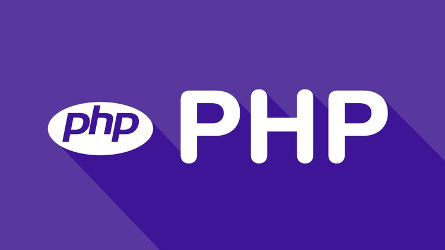

1. Python

Python é uma linguagem de programação versátil e de alto nível, adequada para diversas finalidades, como análise de dados, visualização e automação web. Popular entre os desenvolvedores, destaca-se por sua funcionalidade como linguagem de scripts e suporte a diferentes paradigmas de programação. Sendo de código aberto, possibilita modificações no código-fonte. Sua sintaxe, semelhante ao inglês, facilita a aprendizagem, tornando-a uma excelente escolha para iniciantes em programação. Com a crescente demanda no mercado, aprender Python é um sólido ponto de partida para carreiras em áreas como ciência de dados, engenharia de software e pesquisa em inteligência artificial.
2. C#

C# é uma linguagem orientada a objetos, destacando-se no mercado devido a seu desempenho rápido e estabilidade. Mais acessível que suas predecessoras, C e C++, sua sintaxe simplificada e hierarquia de classe clara facilitam a aprendizagem. Inicialmente ligada ao framework .NET da Microsoft, C# agora é compatível com Windows e Linux, sendo ideal para desenvolver aplicações desktop com GUI. Além disso, é versátil, permitindo o desenvolvimento para ambientes móveis e corporativos, como Android, iOS, e jogos 2D/3D no Unity. Profissionais proficientes em C# estão em alta demanda, especialmente para papéis como desenvolvedor de aplicativos móveis e engenheiro de software.
3. C++

C++ é uma linguagem aprimorada da C e amplamente utilizada na ciência da computação. Sua versatilidade a torna ideal para desenvolver aplicações de alto desempenho, como jogos e softwares gráficos. Combinando características de baixo e alto níveis, é multiparadigma, suportando programação imperativa, genérica e OOP. Embora desafiadora para iniciantes, a proficiência em C++ é essencial para profissionais de TI, sendo sua demanda crescente devido à complexidade, destacando-se no currículo para oportunidades de emprego.
4. JavaScript

JavaScript, com HTML e CSS, é a principal linguagem para aprendizado de desenvolvimento web front-end. Presente em 97,8% dos sites, destaca-se por aprimorar a interatividade, possibilitando a criação de elementos dinâmicos como gráficos animados. Além de sites, é ideal para aplicações web, oferecendo design intuitivo. Fácil de aprender, é a escolha ideal para aspirantes a desenvolvedores web, abrindo oportunidades em UI/UX design, desenvolvimento full-stack e engenharia de software.
5. PHP
PHP é fundamental no desenvolvimento back-end, sendo a linguagem principal do WordPress e utilizada por 78,1% dos sites. Reconhecida pela facilidade de aprendizado e sintaxe simples, oferece frameworks destacados como Laravel. Apesar de antiga, PHP mantém alta demanda, proporcionando oportunidades variadas, incluindo scripts e aplicações desktop.